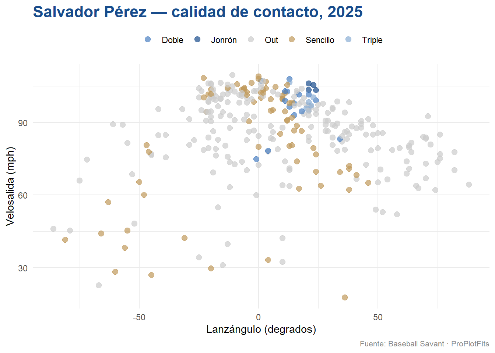
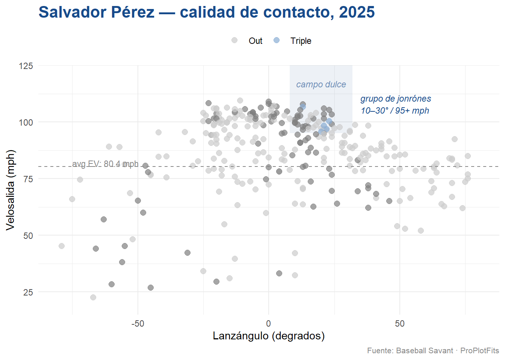

Para ProPlotFits tenemos que explicar en tres lenguas (inglés, español, y R) los datos de Baseball Savant. Es un reto muy alta para mi, un analísta estadounidense desde Kansas. Es decir, seguimos.
Salvy tiene su propio perfil, como todos los jugadores. Sin embargo, quiero demonstrar alguna manera de analizar datos por programación. Podemos simplificar los datos para todos aquí.
Los Datos
Se llama “Baseball Savant” porque el sitio es un eriduto de datos: cada lanzamiento es registrado, también su velocidad, su ángulo de lanzamiento de la bola desde el bate, su trayectoria, y muchos más.
Para descargar todos los lanazamientos los que vio por Salvador Pérez en 2025, 1618 en total, corremos la siguiento pieza de código:
Code
library(tidyverse)
Warning: package 'tidyverse' was built under R version 4.5.2
Warning: package 'ggplot2' was built under R version 4.5.3
Warning: package 'tibble' was built under R version 4.5.2
Warning: package 'tidyr' was built under R version 4.5.3
Warning: package 'readr' was built under R version 4.5.3
Warning: package 'dplyr' was built under R version 4.5.2
Warning: package 'stringr' was built under R version 4.5.3
Warning: package 'lubridate' was built under R version 4.5.3
── Attaching core tidyverse packages ──────────────────────── tidyverse 2.0.0 ──
✔ dplyr 1.2.0 ✔ readr 2.2.0
✔ forcats 1.0.1 ✔ stringr 1.6.0
✔ ggplot2 4.0.2 ✔ tibble 3.3.1
✔ lubridate 1.9.5 ✔ tidyr 1.3.2
✔ purrr 1.1.0
── Conflicts ────────────────────────────────────────── tidyverse_conflicts() ──
✖ dplyr::filter() masks stats::filter()
✖ dplyr::lag() masks stats::lag()
ℹ Use the conflicted package (<http://conflicted.r-lib.org/>) to force all conflicts to become errors
Rows: 1618 Columns: 118
── Column specification ────────────────────────────────────────────────────────
Delimiter: ","
chr (16): pitch_type, player_name, events, description, des, game_type, sta...
dbl (93): release_speed, release_pos_x, release_pos_z, batter, pitcher, zon...
lgl (8): spin_dir, spin_rate_deprecated, break_angle_deprecated, break_len...
date (1): game_date
ℹ Use `spec()` to retrieve the full column specification for this data.
ℹ Specify the column types or set `show_col_types = FALSE` to quiet this message.
Dentro el URL podemos ver el ID de jugador para Salvy: 664728. Puedes reemplezarlo con el ID de otro jugador y vas a descargar sus estadísticas.
Velosalida y Lanzángulo
Hace diez años que los Royals ganaron la Serie Mundial, en 2015. Este Octubre pasó durante mi último año de escuala secundaria. Desde entonces, he graduado con un Masters’ de analíticas empresariales, y también he trabajado para una agencia de transporte regional, una firma de ingenería, y una firma de FinTech.
Ahora mismo estoy aprendiendo la importancia de velocidad de salida y lanzamiento de ángulo. Entiendo que hay vocabulario en español las termas de béisbol, por ejemplo, un lanzamiento es un “pitch” en inglés.
¿Pero existen termas para estas nuevas termas? No sé, sin embargo, podemos decir velosalida y lanzángulo. Por que toda la gente quiere saber: ¿qué tan fuerte golpeaste la bola; y cuánto la lanzaste?
Velosalida mide lo fuerte que la bola salió, y es una medida en millas por hora. Lanzángulo, sin embargo, nos cuenta la historia del resultado después de salió el bate: el fly es más de 0 degrados, un batazo de línea paralela al suelo es 0 degrados, y un bola de piso es menos de 0 degrados.
Seguimos viendo los lanzamientos de Salvador Pérez en 2015. Podemos correr la sigiuente para comparar su Velosalida y Lanzángulo
Code
# empezamos con la trama de datos, cada fila es un lanzamientosalvy_2025 %>%# eliminar los NA's para velosalida (launch_speed) y lanzángulo (launch_angle)filter(!is.na(launch_speed), !is.na(launch_angle)) %>%# queremos mutar una nueva columna que condense todos los eventos que se refieren a un "out"mutate(outcome =case_when( events =="home_run"~"Jonrón", events =="single"~"Sencillo", events =="double"~"Doble", events =="triple"~"Triple", events %in%c("field_out", "force_out", "grounded_into_double_play","double_play", "fielders_choice_out") ~"Out",TRUE~NA_character_ )) %>%# solo queremos bateos y outsfilter(!is.na(outcome)) %>%# para nuestra plot, queremos poner lanzángulo por el eje X, y velosalida por el eje Yggplot(aes(x = launch_angle, y = launch_speed, color = outcome)) +geom_point(alpha =0.7, size =2.5) +scale_color_manual(values =c("Jonrón"="#174B8B","Doble"="#4A7FC1","Triple"="#8AADD4","Sencillo"="#C09A5B","Out"="#CCCCCC" )) +labs(title ="Salvador Pérez — calidad de contacto, 2025",x ="Lanzángulo (degrados)",y ="Velosalida (mph)",color =NULL,caption ="Fuente: Baseball Savant · ProPlotFits" ) +theme_minimal(base_family ="sans") +theme(plot.title =element_text(size =16, face ="bold", color ="#174B8B"),plot.caption =element_text(size =8, color ="#888888"),legend.position ="top" )

Destacando el “Sweet Spot” de Salvy
Como analístas, nuestro objetivo de comunicar datos a los accionistas (Salvy, los otros bateadores de los Royals, y sus entrenadores) es hacer que las conclusiones sean evidentes.
Para encontrar la mitad de velosalida de Salvy, ejecute el siguiente código:
Code
avg_ev <-# empezar con trama de datos original salvy_2025 %>%# eliminar NA'sfilter(!is.na(launch_speed)) %>%# resumir la mitad de velosalidasummarise(mean_ev =mean(launch_speed)) %>%# destacar la mitad en su proprio objeto programáticopull(mean_ev)
La mitad de velosalida de Salvy en 2025 fue 80.4 mph. Ahorita, queremos destacar el “sweet spot” entre velosalida y lanzángulo con la siguiente:
Warning: Removed 6 rows containing missing values or values outside the scale range
(`geom_point()`).

Thoughts from the Plot
Hay tres puntos para contar:
Primero, Salvy tiene sus jonrónes dentro el “sweet spot” entre velosalida y lanzángulo (más de 95 mph, entre 10-30 degrados). Salvy es un bateador con muchísima habilidades.
Segundo, Salvy tuvo muchas “arrancamargaritas”, como se puede ver por los muchos puntos grises que están por encima de su mitad velosalida.
Tercera, los sencillos debajo de su mitad velosalida demuestra que Salvy puede mantenerse productivo incluso cuando no hay energía. Hay mucha variedad entre sus sencillos suaves. Podemos hacer una suposición fundamentada de que hubo al menos 6 sencillos “bloop” para Salvy, porque hay un grupo de puntos dorados que tuvieron un lanzángula de más de 30 degrades debajo de su medio de velosalida.
Antes del comienzo de 2026
Salvy tendrá 36 año en mayo. Todavía tiene las habilidades de un bateador de las Grandes Ligas.
La pregunta es: Pueden los Royals manejar su carga de trabajo lo suficientemente bien como para mantener esos puntos en el punto dulce hasta septiembre? ¿Están los Reales confiados en que los receptores de respaldo intervengan y actúen defensivamente al mismo nivel cuando Salvy necesita un día en DH?
Lo seguiremos todo el año.
We’ll see you on the diamond.
— ProPlotFits, Kansas City
Data: Baseball Savant, 2025 season. Analysis: R / tidyverse / ggplot2. Code available on GitHub.